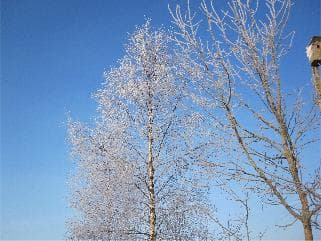

Сгнила советская власть. Вместе с вождями ушла эпоха старая.
В муках родилась новая. И новые "князья".
Наша жизнь причудливо изменилась.
А над этой землей все также дуют ветры, светит Солнце, мерцают звезды морозными ночами, поют соловьи ночами летними. Равнодушная природа не меняется. Менялись религии, этносы, враги, друзья, мораль, орудия труда и войны, вожди, лозунги. И каждое поколение думало, его жизнь, его идеалы - навсегда.
И мы так думаем.
Глаза язычников, богомольцев, норманов, датских рыцарей, князей церкви, петровских солдат, российских баронов, расхристанных матросов, белогвардейцев Юденича, немецких и советских солдат, крестьян, стукачей и деревенских пьяниц видели эту землю такой, какой видим мы с вами, обоняли те же запахи, земля на их ноги реагировала, как сегодня на наши.
Их ласкало, то же, Солнце и колол тот же ветер.
Мы приходим и уходим, она останется до конца времен.
Не отдаем себе отчета, - с истории этой земли (Ингерманландии) началась история этой Страны (нашей).
Милые.
Современники.